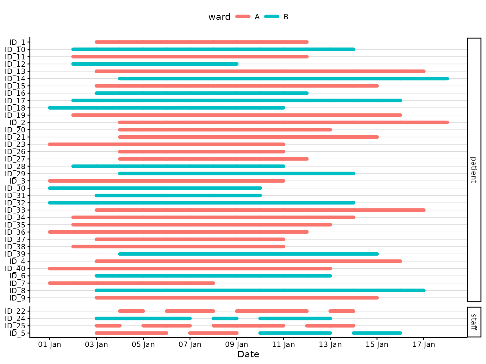
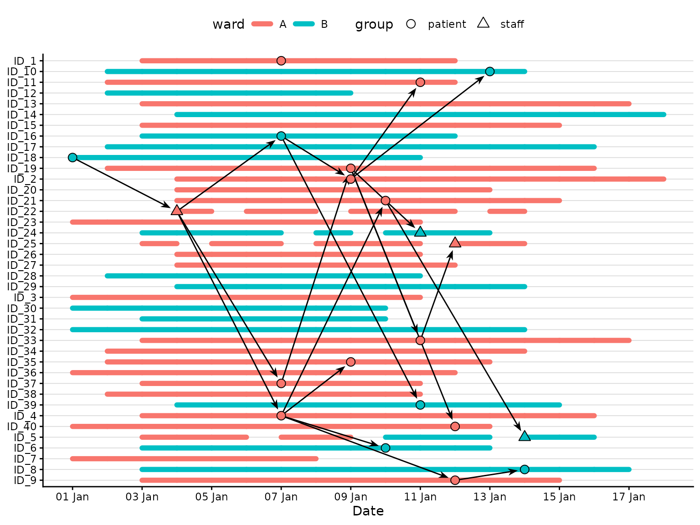

Explore changing attendance, ward transfers, mixing patterns, and a staff masking intervention in one simulation.
library(nososim)
library(dplyr)
#>
#> Attaching package: 'dplyr'
#> The following objects are masked from 'package:stats':
#>
#> filter, lag
#> The following objects are masked from 'package:base':
#>
#> intersect, setdiff, setequal, union
library(ggplot2)
set.seed(123)
dates <- as.Date("2026-01-01") + 0:30
timeline <- make_timeline(
n = 40,
dates = dates,
attributes = list(
ward = c(A = 0.6, B = 0.4),
group = c(patient = 0.8, staff = 0.2)
),
admission_delay = 0:3,
stay = 7:14,
R = rpois(100, 2.7)
)
timeline <- timeline |>
#ID 5 transfers to ward B on 09/01/2026
set_attribute(
id = "ID_5",
from = as.Date("2026-01-09"),
attributes = list(ward = "B")
) |>
#give 2 days off to a all staff members
group_by(id) |>
(\(x) {
set_schedule(
x,
id = unique(x$id[x$group == "staff"]),
weekdays = sample(1:7, 5)
)
})() |>
ungroup() |>
nososim:::new_timeline()
autoplot(timeline, aes(colour = ward)) +
facet_grid(
rows = vars(group),
scales = "free_y",
space = "free_y"
)
initial <- timeline |>
filter(date %in% dates[c(1, 7)]) |>
slice_head(n = 1, by = date) |>
transmute(id, date_infection = date)
staff_masking <- function(present, date) {
E_t <- matrix(
0,
nrow(present),
nrow(present),
dimnames = list(present$id, present$id)
)
if (date >= dates[12]) {
E_t[present$group == "staff", ] <- 0.8
}
E_t
}
mixing_matrices <- list(
# within ward transmission more likely
ward = matrix(
c(2, 1, 1, 2),
nrow = 2,
dimnames = list(
c("A", "B"),
c("A", "B")
)
),
#staff-patient interactions more risky
group = matrix(
c(1, 1.5, 2, 1),
nrow = 2,
dimnames = list(
c("patient", "staff"),
c("patient", "staff")
)
)
)
outbreak <- make_outbreak(
timeline,
initial,
w = dpois(0:10, 2),
dates = dates,
intervention = staff_masking,
mixing = mixing_matrices
)
autoplot(outbreak, aes(colour = ward, fill = ward, shape = group)) +
scale_shape_manual(values = c(patient = 21, staff = 24))